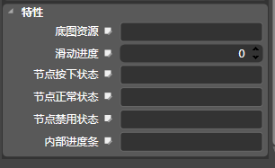

滑动条[UISilder]
图标
描述
UISilder的类是一个UIWidget子类，它实现了在触摸屏上的滑动条。
触摸一个滑动条时拦截事件和动作消息发送到目标对象时。设定的目标和行动方法都继承自UIWidget。该控件提供了方法来设置滑动条的底图资源，不同状态下的节点资源，滑动进度值，内部进度条资源等属性。
九宫格属性
常规属性
特性

底图资源
配置一张默认状态下的底图图片（png,jpg），控件默认状态下显示。
滑动进度
设置控件的滑动进度值，取值范围（0-100）
节点按下状态
配置一张按下状态下的滑动节点图片（png,jpg），控件节点按下状态下显示。
节点正常状态
配置一张默认状态下的滑动节点图片（png,jpg），控件节点默认状态下显示。
节点禁用状态
配置一张禁用状态下的滑动节点图片（png,jpg），控件节点禁用状态下显示。
显示进度条
控制内部进度条是否显示
内部进度条
配置一张按下状态下的滑动节点图片（png,jpg），控件节点按下状态下显示。
Copyright © 2013 CocoStudio.org. All Rights Reserved. 版本v1.0.0